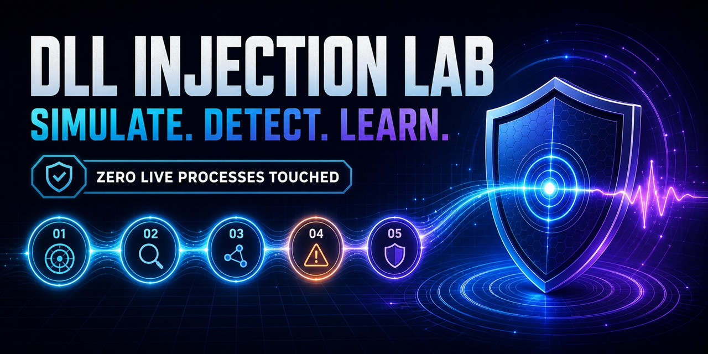

Interactive blue-team lab
See the signal.
Break the chain.
Explore the five telemetry events behind a classic DLL-injection detection—without injecting a DLL, opening a process, or installing an agent.
- 0runtime dependencies
- 43passing tests
- 5correlated signals

Correlation playground
Build or break the detection
Toggle any stage. The detector only fires when all five ordered events retain one actor, target, module, and flow.
Click an event to remove or restore it.
The hard boundary
Telemetry, never technique.
This page runs a deterministic JavaScript visualization. It makes no network requests, collects no analytics, and cannot enumerate, open, read, write, or execute a process. Every PID, module, tick, and finding is fictional.
Ready for the full lab?
Clone it. Test it. Extend it.
Get JSONL fixtures, Markdown/JSON/SARIF output, CI examples, and the Python detector.